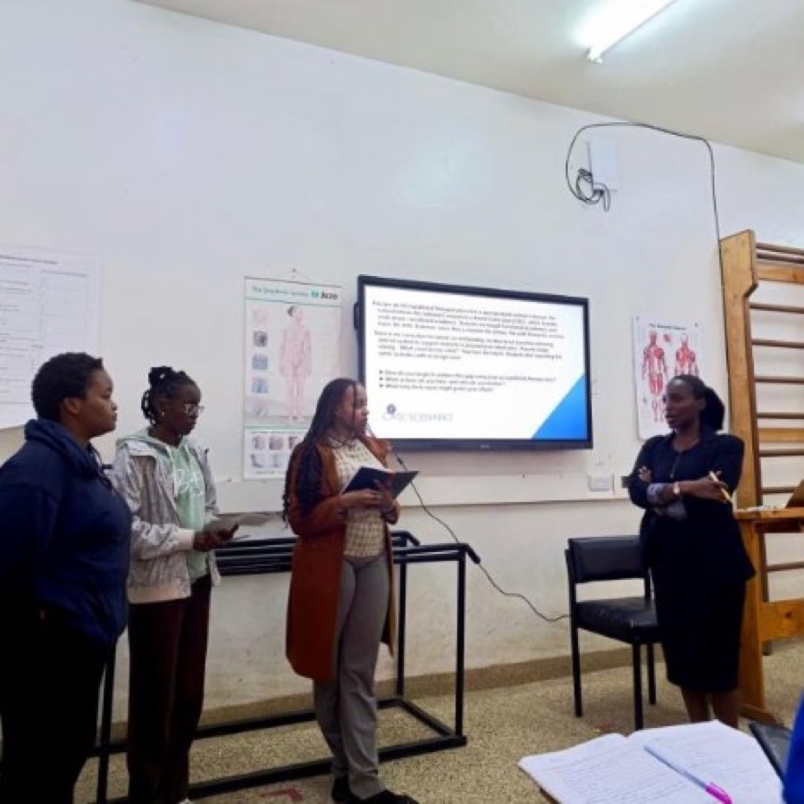

"What conditions must be strengthened so that meaningful participation becomes possible?"
Named after Zoe, the Greek word for life, ZIRI is a collective of occupational therapy consultants and allied health professionals working to close the rehabilitation gap across low and middle income countries. We strengthen organizations serving people with disabilities across Africa by equipping their teams with specialist knowledge, practical skills, and effective systems, so they can deliver care that is more inclusive, responsive, and sustainable.
ZIRI partners with hospitals, schools, and organizations to train practitioners, design therapeutic spaces, and build the systems that make rehabilitation and inclusion sustainable.
Since 2022, we have partnered with organizations across Africa to strengthen rehabilitation and inclusion through real training, real systems, and real results.

Every session is built around real cases and real questions, giving teams skills they can apply immediately with the children and families they serve.
The session was informative, practical, and highly relevant to the work we do every day with children with special needs. It was engaging and interactive, allowing us to ask questions, share experiences, and learn from the expertise of the facilitator. The session inspired us to continue improving our skills and to work more collaboratively in supporting every child's growth and potential.
The workshop was highly interactive, practical, and relevant to occupational therapy education and practice. It provided valuable insights into applying OT beyond the clinical setting, with a strong focus on real life participation, vocational preparation, and community integration. The facilitator made the concepts accessible and engaging, leaving us with practical ideas that can be applied in our teaching and practice.
Have you worked with ZIRI? We would love to feature your story
Currently in development, a program designed and delivered directly to beneficiaries, helping people build the skills and support needed for meaningful work.